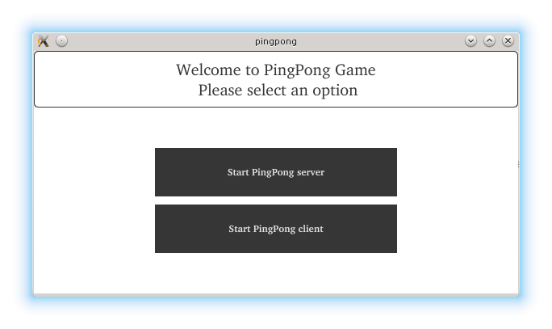
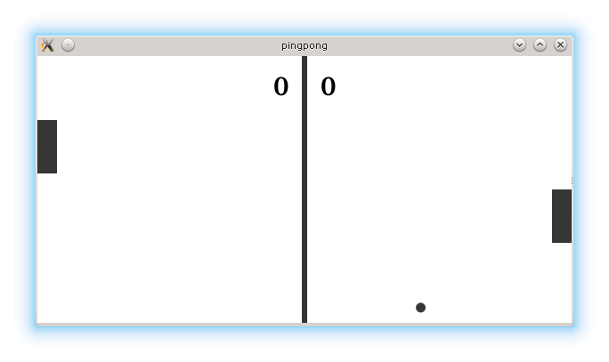

Bluetooth QML Ping Pong example
A QML example showing Bluetooth communication.
The Bluetooth QML Ping Pong example presents the socket communication between two Bluetooth devices. The basic concept is the ping pong game where two players communicate via sockets.

Running the Example
To run the example from Qt Creator, open the Welcome mode and select the example from Examples. For more information, visit Building and Running an Example.
At the beginning, the user selects the role. One device acts as a server and the second one as a client. After selecting the role, adjustments to the screen size are done (two devices might have different screen sizes). The server side starts a service named "PingPong server".
m_serverInfo = new QBluetoothServer(QBluetoothServiceInfo::RfcommProtocol, this); connect(m_serverInfo, &QBluetoothServer::newConnection, this, &PingPong::clientConnected); connect(m_serverInfo, QOverload<QBluetoothServer::Error>::of(&QBluetoothServer::error), this, &PingPong::serverError); const QBluetoothUuid uuid(serviceUuid); m_serverInfo->listen(uuid, QStringLiteral("PingPong server"));
On the client side, the full service discovery on the nearby Bluetooth devices is done.
discoveryAgent = new QBluetoothServiceDiscoveryAgent(QBluetoothAddress()); connect(discoveryAgent, &QBluetoothServiceDiscoveryAgent::serviceDiscovered, this, &PingPong::addService); connect(discoveryAgent, &QBluetoothServiceDiscoveryAgent::finished, this, &PingPong::done); connect(discoveryAgent, QOverload<QBluetoothServiceDiscoveryAgent::Error>::of(&QBluetoothServiceDiscoveryAgent::error), this, &PingPong::serviceScanError); #ifdef Q_OS_ANDROID //see QTBUG-61392 if (QtAndroid::androidSdkVersion() >= 23) discoveryAgent->setUuidFilter(QBluetoothUuid(androidUuid)); else discoveryAgent->setUuidFilter(QBluetoothUuid(serviceUuid)); #else discoveryAgent->setUuidFilter(QBluetoothUuid(serviceUuid)); #endif discoveryAgent->start(QBluetoothServiceDiscoveryAgent::FullDiscovery);
When the ping pong service is discovered, the client connects to the server using the socket.
socket = new QBluetoothSocket(QBluetoothServiceInfo::RfcommProtocol); socket->connectToService(service); connect(socket, &QBluetoothSocket::readyRead, this, &PingPong::readSocket); connect(socket, &QBluetoothSocket::connected, this, &PingPong::serverConnected); connect(socket, &QBluetoothSocket::disconnected, this, &PingPong::serverDisconnected);
On the server side, the connected signal is emitted initiating that the client is connected. The necessary signals and slots on the server side are connected.
if (!m_serverInfo->hasPendingConnections()) { setMessage("FAIL: expected pending server connection"); return; } socket = m_serverInfo->nextPendingConnection(); if (!socket) return; socket->setParent(this); connect(socket, &QBluetoothSocket::readyRead, this, &PingPong::readSocket); connect(socket, &QBluetoothSocket::disconnected, this, &PingPong::clientDisconnected); connect(socket, QOverload<QBluetoothSocket::SocketError>::of(&QBluetoothSocket::error), this, &PingPong::socketError);
The game starts after the devices are connected and the screen is adjusted.
if (m_role == 1) updateDirection(); m_timer->start(50);
The server updates the ball direction and coordinates. The coordinates of pedals are sent to each other every 50ms.
if (m_role == 1) { checkBoundaries(); m_ballPreviousX = m_ballX; m_ballPreviousY = m_ballY; m_ballY = m_direction*(m_ballX+interval) - m_direction*m_ballX + m_ballY; m_ballX = m_ballX + interval; size.setNum(m_ballX); size.append(' '); QByteArray size1; size1.setNum(m_ballY); size.append(size1); size.append(' '); size1.setNum(m_leftBlockY); size.append(size1); size.append(" \n"); socket->write(size.constData()); emit ballChanged(); } else if (m_role == 2) { size.setNum(m_rightBlockY); size.append(" \n"); socket->write(size.constData()); }
The coordinates are updated and exchanged via sockets. As presented, the server sends its pedal's y coordinate and the ball coordinates whereas, the client sends only its pedal y coordinate.
if (((m_ballX + ballWidth) > (m_boardWidth - blockSize)) && ((m_ballY + ballWidth) < (m_rightBlockY + blockHeight)) && (m_ballY > m_rightBlockY)) { m_targetY = 2 * m_ballY - m_ballPreviousY; m_targetX = m_ballPreviousX; interval = -5; updateDirection(); } else if ((m_ballX < blockSize) && ((m_ballY + ballWidth) < (m_leftBlockY + blockHeight)) && (m_ballY > m_leftBlockY)) { m_targetY = 2 * m_ballY - m_ballPreviousY; m_targetX = m_ballPreviousX; interval = 5; updateDirection(); } else if (m_ballY < 0 || (m_ballY + ballWidth > m_boardHeight)) { m_targetY = m_ballPreviousY; m_targetX = m_ballX + interval; updateDirection(); }
In the code above, it was shown how the server checks whether the ball has reached the boundaries of the board. In the case of the goal, the server updates the results via its socket.
